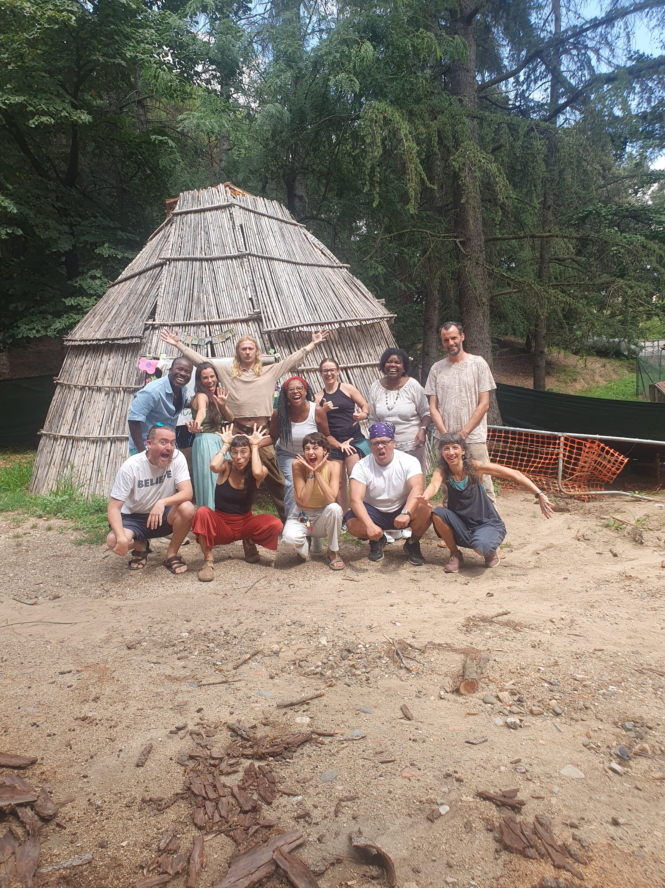

Our story
Founded in Llinars del Vallès in 2021, mentored by Dr. Martí Boada Juncà
Why we started
Born out of a pandemic, built on nature.
The impetus for this project came from our passion for nature and the challenges students faced during the COVID-19 pandemic. In 2021, we decided to dedicate all our energy to founding a school in nature, with an ecological curriculum fostering a deeper connection between humans and the natural world.
Camille Eichmann (Swiss) and Mercia Silva (Brazilian) hold Master's degrees in Science – Geography from the University of Zurich. Starting a school is no easy task! Our collaboration with other schools and projects was instrumental in designing an ecological curriculum that emphasizes community, non-violent communication, and the Four Primary Dimensions of human experience: Social, Economic, Ecological, and Worldview.
Since 2022, we have also been mentored by Dr. Martí Boada Juncà, a pioneering environmental scientist and educator in Catalonia. Through his vision for a more socioecological world, we have embraced his Socio-Eco Pedagogy, learning to integrate ecological, social, and cultural dimensions into education. His guidance has been invaluable in shaping The Chestnut Tree's approach, helping us foster a deeper, more holistic connection between students and nature.
At The Chestnut Tree, we don't just teach – we practice Social Ecological Education!
Our Team
The people behind The Chestnut Tree

Founder / Head Teacher
Mercia Silva Eichmann
Master of Direction of Educational Centers, University of Barcelona · Master of Science, University of Zurich.
Founder / Pedagogue
Camille Eichmann
Higher Teaching Degree, University of Zurich · Master of Science, University of Zurich.
OUTDOOR TEACHING COORDINATOR
Joshua Townsend-Foreman
Bachelor of Science, Newcastle University. Environmental education expert.
Get involved
Volunteering & staff opportunities
We welcome volunteers and staff who want to work outdoors and with children — from short workcamps to ongoing roles.
See staff & volunteering →Support Us
Donate to The Chestnut Tree
Donations support scholarship places, outdoor infrastructure, and learning materials.
See how to donate →